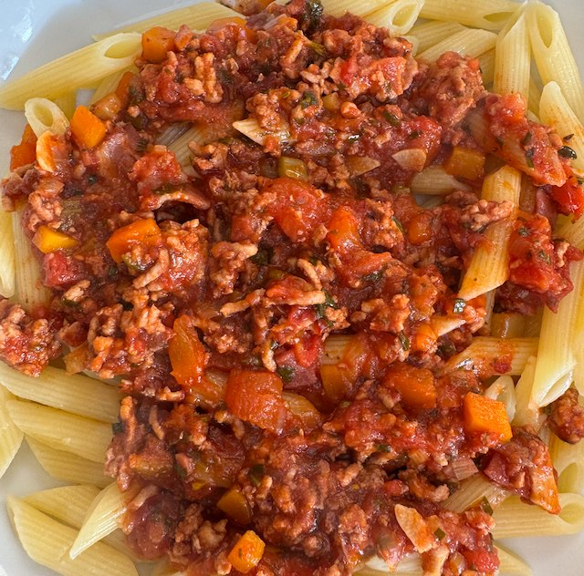

Mariano's Tomato Sauce

Serves: 8
Cook Time: 1 hour
From marianos.capitalfinemeats.ca, which no longer exists. Serve with butter bean and tomato salad.
Ingredients
- 1 220g pack bacon, diced
- olive oil
- 1 onion, chopped
- 4 spring onion, chopped
- 2 carrot, diced
- 2 celery sticks, diced
- 1 red pepper, diced
- 5 garlic cloves, sliced
- 3 tbsp tomato puree
- 500g beef mince
- 500g pork mince
- salt and pepper
- 3 400g tin chopped tomatoes
- handful parsley, chopped
- handful basil, chopped
- 1 spring rosemary, chopped
- 2 tsp dried oregano
- 1 tsp chili flakes
Method
Heat pan to medium. Add oil, bacon and fry until fat renders. Turn heat to low add onion and fry till softened. Turn heat to medium, add spring onion, carrots, celery, red pepper and soften. Add garlic and tomato puree and fry for 2 min.
Heat a frying pan to hot. Add beef, pork, salt and pepper. Cook to get some brown on the meat. Flip and cook a bit more.
Add meat to the veg. Deglaze the pan, and add to the veg.
Add tomatoes, parsley, basil, oregano, rosemary and chilli flakes. Bring to the simmer and cook for 30 min. If you have time you can cook for 90 min. Taste for salt.